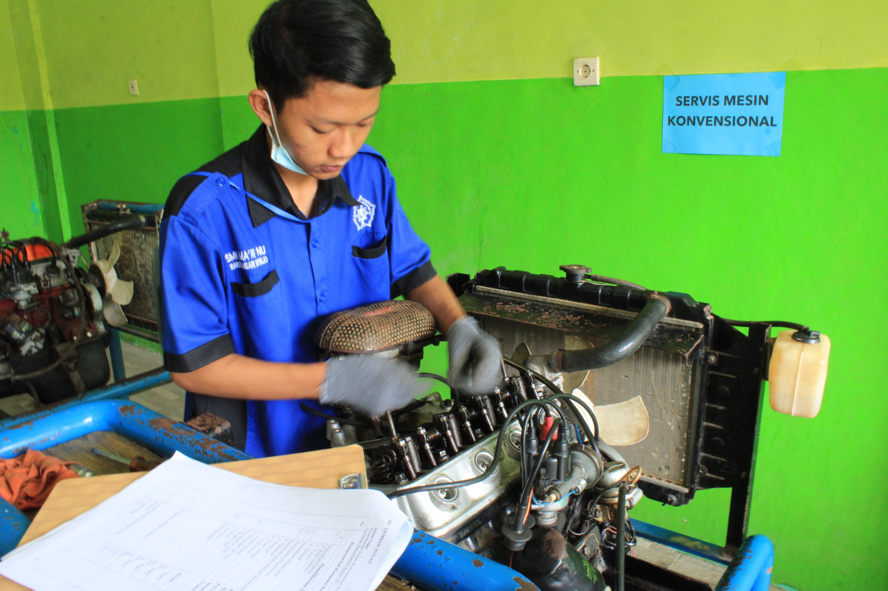
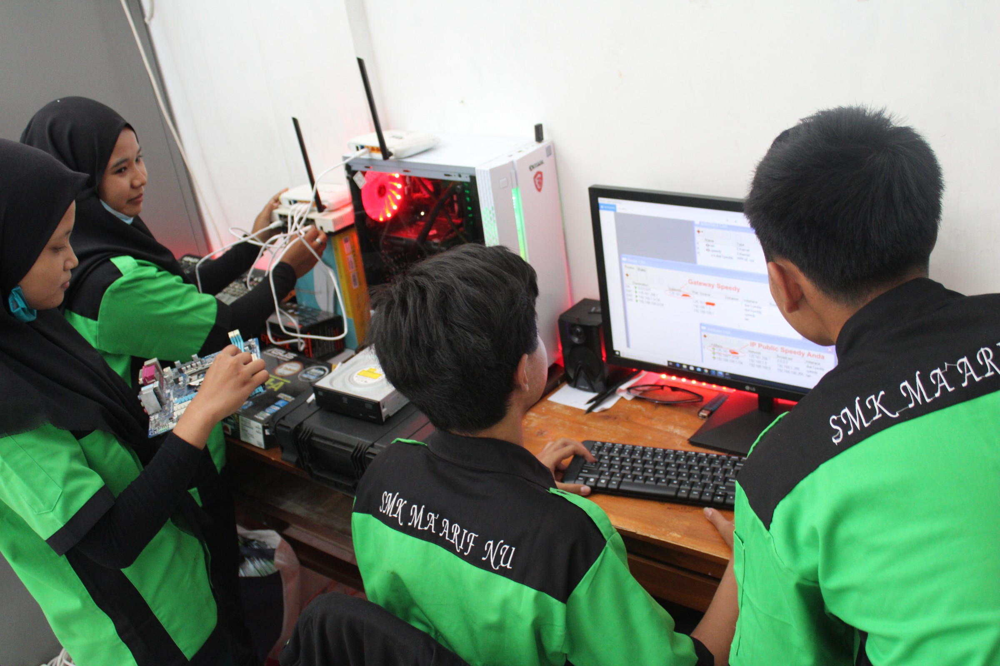
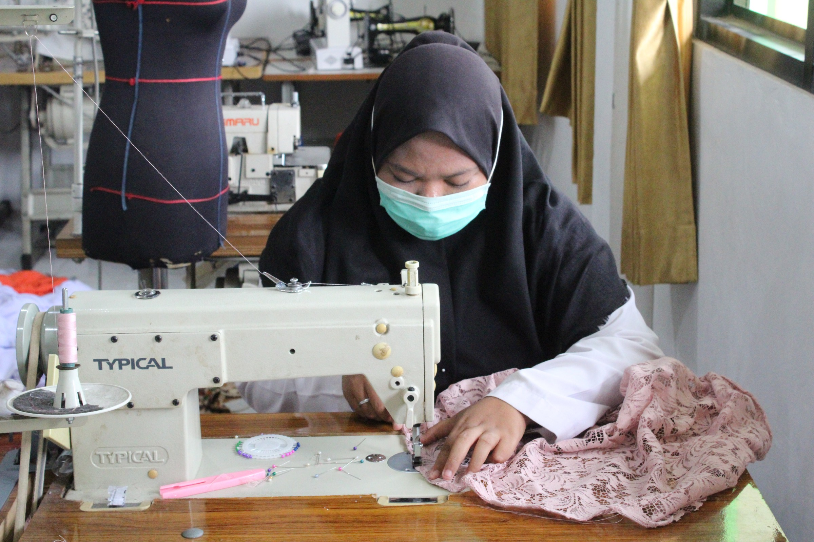
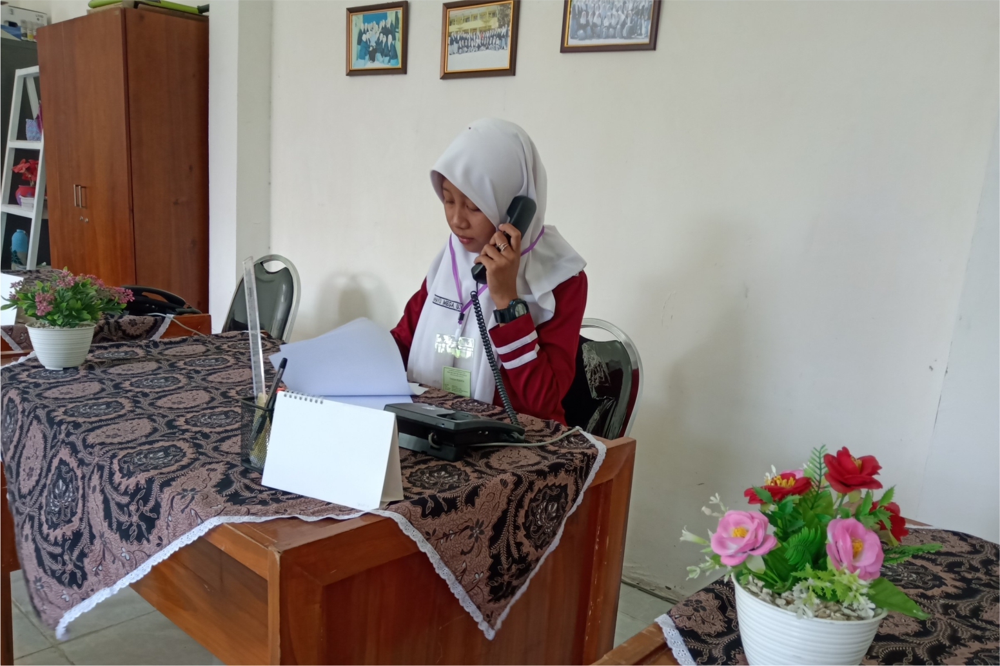
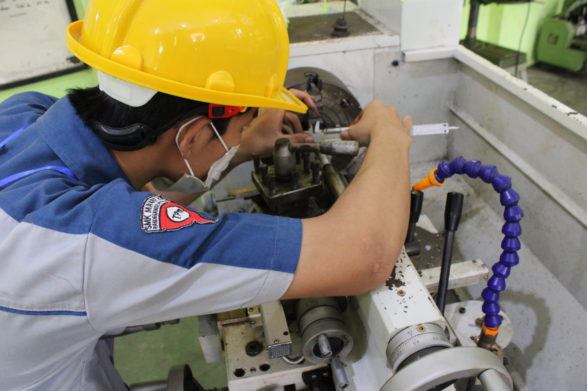
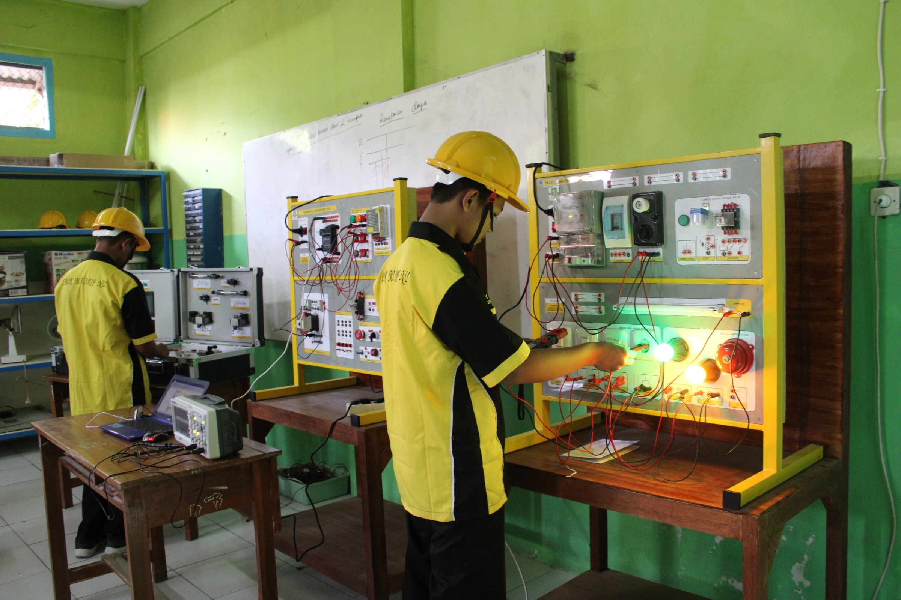

MENJAJAKI PROGRAM KEJURUAN
Temukan berbagai program kejuruan yang ditawarkan di SMK Maarif NU Driyorejo, sebuah sekolah kejuruan terkemuka di Jawa Timur, Indonesia. Pelajari tentang pentingnya pendidikan kejuruan dalam sistem pendidikan Indonesia dan bagaimana hal itu mempersiapkan siswa untuk karir yang sukses dalam bidang dan pekerjaan tertentu. Jelajahi upaya pemerintah untuk mengembangkan pendidikan kejuruan di Indonesia dan bagaimana SMK Maarif NU Driyorejo berkontribusi dalam inisiatif ini
TEKNIK KENDARAAN RINGAN
Teknik Kendaraan Ringan merupakan kompetensi keahlian dibidang Teknik Otomotif yang menekankan keahlian pada bidang penguasaan jasa perbaikan kendaraan ringan. Kompetensi keahlian teknik kendaraan ringan menyiapkan peserta didik untuk bekerja pada pekerjaan jasa perawatan dan perbaikan di dunia usaha / industri.
Teknik Komputer dan jaringan
TKJ (Teknik Komputer dan Jaringan) adalah ilmu berbasis Teknologi Informasi dan Komunikasi terkait kemampuan algoritma, dan pemrograman komputer, perakitan komputer, perakitan jaringan komputer, dan pengoperasian perangkat lunak, dan internet.
Tata Busana
Jurusan Tata Busana adalah Jurusan yang diperuntukkan bagi mereka yang ingin mengembangkan bakat dan minatnya dalam hal jahit menjahit, sampai dengan membuat produk yang berkualitas. Pada intinya jurusan ini mengakomodir para siswa yang memiliki minat dalam hal fashion.
Otomatisasi dan Tata Kelola Perkantoran

Tomatisasi dan Tata Kelola Perkantoran adalah kompetensi keahlian pada Bidang Studi Bisnis dan Manajemen Program Studi Keahlian Manajemen Perkantoran yang menekankan pada keterampilan pengelolaan administrasi kepegawaian, keuangan, sarana dan prasarana serta humas dan keprotokolan.
Teknik Pemesinan

Teknik Pemesinan adalah jurusan yang mempelajari tentang energi dan sumber energinya. Hal-hal yang dipelajari dalam teknik mesin banyak berurusan dengan penggerak-penggerak awal seperti turbin uap, motor bakar, mesin-mesin perkakas, pendingin dan pemanas dan alat-alat kimia tertentu.
Teknik Instalasi Tenaga Listrik

Teknik Instalasi Tenaga Listrik adalah jurusan yang mempelajari tentang perencanaan dan pemasangan instalasi penerangan, tenaga pemasangan dan pengoperasian motor listrik dengan kendali elektromekanik, elektronik dan PLC (Programable Logic Controller).